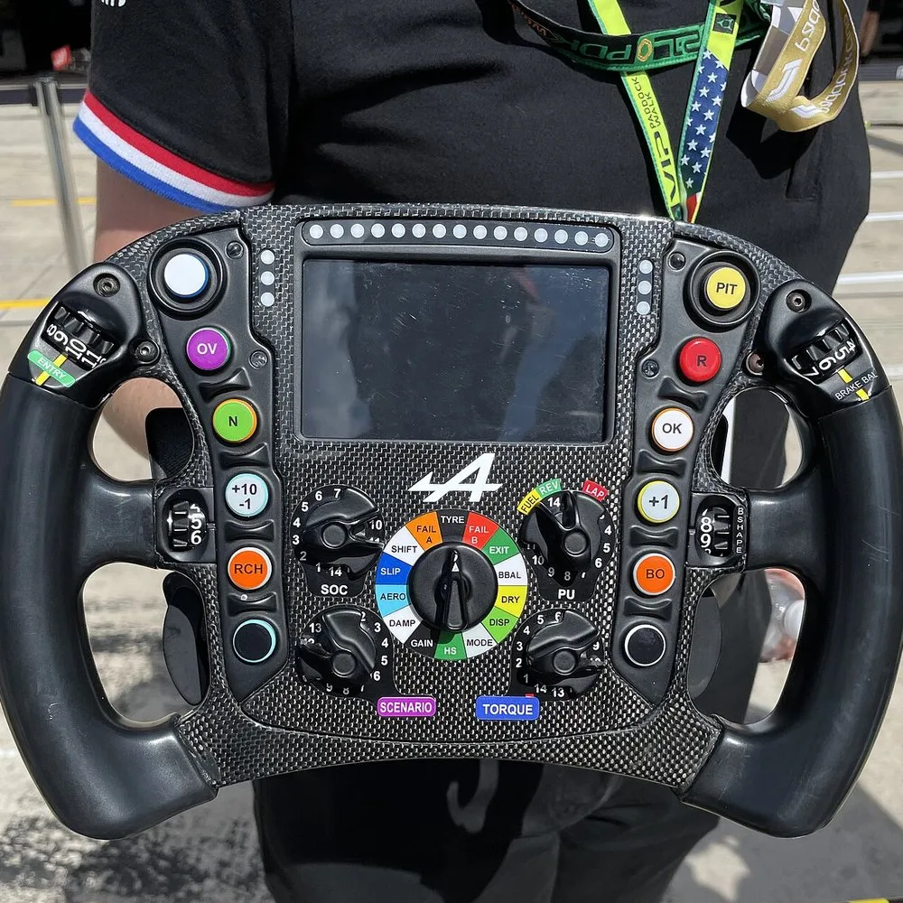
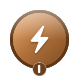
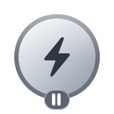
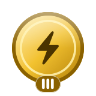
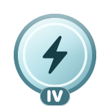
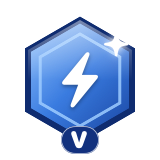
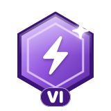
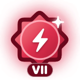
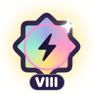

Clásico
Un tablero, un tiempo. Supera tu mejor marca, sube de Novato a Leyenda y descubre exactamente dónde se fueron los segundos.
Un juego de concentración de un minuto para iPhone y Android. Encuentra los números en orden, lo más rápido que puedas.
¿Te distraes al leer, estudiar o trabajar? Una tabla de Schulte entrena justo esa atención, y 49 la convierte en un juego al que apetece volver.
49 es un juego para practicar la concentración, no un producto médico.
A velocidad de carrera, la concentración lo es todo. Los pilotos profesionales entrenan la atención, la exploración visual y los reflejos tan en serio como su forma física, y algunos lo hacen con tablas de Schulte. 49 convierte ese mismo ejercicio en un minuto al día.

300 km/h
Donde una sola mirada tiene que abarcar todo lo que te rodea.
1 minuto
Al día basta para el mismo ejercicio. No hace falta un coche de carreras.
Lo bastante corto para encajarlo en cualquier momento, y pensado para que la partida de mañana sea fácil de empezar.
Lo que viene esta semana
Todos juegan el mismo tablero, así que puedes compararte con tus amigos. Casi todos los días, además, se mueve o cambia de aspecto. Los días especiales tienen su propio tablero: una calabaza en Halloween, un corazón en San Valentín, un ovillo de lana en el Día del Gato (17 de febrero y 8 de agosto) y un hueso en el Día del Perro (1 de julio y 26 de agosto).
Misiones de hoy
Completa las tres para ganar XP extra.
Estadísticas
Tu fila de arriba va más rápido.
Ahora encuentras sus números 0,3 segundos antes que la semana pasada.
Racha
12 días seguidos
Los protectores de racha se ganan a medida que crece tu racha, y la salvan el día que no juegas. Un recordatorio opcional se asegura de que nunca se rompa por despiste.
Una contrarreloj limpia.
Solo tú, el tablero y el reloj. Sin puntos ni efectos, nada que aparte tus ojos de los números. Es la tabla de Schulte clásica y la prueba más pura de tu concentración.
Después de cada partida ves tu tiempo, tu ritmo y tus fallos, tus despistes y tu Cadencia: lo regular que fuiste al encontrar cada número.
Puntos, combos, ×3.
Cada número vale 100 puntos, más hasta 50 por velocidad. Encuentra el siguiente antes de que se agote el tiempo del combo y el multiplicador sube: ×2 con un combo de 5, ×3 con 15.
Un toque erróneo reduce el combo a la mitad, pero nunca te quita puntos. ¿Quieres los efectos sin la presión? Relax mantiene los sonidos y las celebraciones, sin los puntos ni los récords.
Cuenta hacia arriba del 1 al 49, hacia abajo del 49 al 1 o en orden aleatorio, en cada modo. Cada modo tiene sus propios récords y su propio rango.
Un tablero, un tiempo. Supera tu mejor marca, sube de Novato a Leyenda y descubre exactamente dónde se fueron los segundos.
Termina un tablero y el siguiente ya te está esperando. Tu resultado es tu ritmo en números por minuto. Para cuando quieras.
El reloj corre hacia atrás. Cada número que encuentras te devuelve tiempo, y cada fallo te quita un poco. ¿Hasta dónde llegarás?
Juega 1 contra 1, 2 contra 2 o con todo un grupo, desde una clase hasta un equipo del trabajo. Todos reciben exactamente el mismo tablero, así que la única diferencia es la concentración.
Tus amigos se unen con un código de sala de cinco caracteres, un código QR o un enlace, y cada uno elige un apodo para la partida. ¿No tienes con quién jugar? En la Sala de espera te unes a una sala abierta, o Partida rápida te busca un rival. ¿Solo hay un móvil? Pásalo en modo invitado.
Un solo tablero, en directo, cara a cara. Quien toca primero un número se lo lleva, y desaparece para el otro jugador.
De 3 × 3 a 11 × 11
Un 3 × 3 o 4 × 4 mini, un 5 × 5 o 6 × 6 rápido, el 7 × 7 estándar, y 9 × 9 u 11 × 11 para los más exigentes.
¿Te atascas? Una pista te muestra dónde está el siguiente número. Recibes unas cuantas cada día, y cada una suma 5 segundos, así que las pistas te ayudan a aprender pero nunca dan un récord.
Cada modo, dirección y estilo tiene su propio rango, según tu mejor resultado en él. Esto es lo que pide cada uno en el tablero estándar de 7 × 7. Los requisitos se ajustan en tableros más pequeños, más grandes y más difíciles.
| Rango | Clásico | Sin fin | Contrarreloj |
|---|---|---|---|
| Termina una partida | Termina un tablero | Juega una ronda | |
| Menos de 2:00 | 25 por minuto | 12 números | |
| Menos de 1:30 | 32 por minuto | 16 números | |
| Menos de 1:10 | 40 por minuto | 22 números | |
| Menos de 0:55 | 48 por minuto | 28 números | |
| Menos de 0:45 | 56 por minuto | 36 números | |
| Menos de 0:35 | 65 por minuto | 48 números |
El tablero de arriba es una muestra de 4 × 4. Los rangos se ganan en la app, en todos los tamaños.
Además de los rangos hay 100 clasificaciones globales de Game Center: mejor tiempo y más puntos por tablero y dirección, de hoy, de esta semana, de este mes y de siempre. El Reto diario tiene su propia clasificación, y cuenta tu mejor intento.
Premian la velocidad, la precisión, la concentración, los combos, las rachas y la curiosidad. Los logros por niveles suben por ocho medallas, del bronce al prisma.

Bronce
Plata
Oro
Platino
Zafiro
Amatista
Rubí
Prisma
Todo el día, las apps compiten por nuestra atención, y se les da muy bien ganar. Los feeds, las notificaciones y la reproducción automática están hechos para quitárnosla. Casi nada está hecho para devolvérnosla.
Creo que eso está al revés. La concentración es lo que te permite leer una página sin distraerte, estudiar sin echar mano del móvil y dar lo mejor de ti en el trabajo. Como la fuerza o la velocidad, es algo que se puede entrenar.
Así que tomé la tabla de Schulte, un ejercicio en papel que se usa desde hace décadas para entrenar la atención, la búsqueda visual y la lectura rápida, y la convertí en un juego al que apetece volver. Un minuto por partida, un tablero nuevo cada día y, después de cada una, una frase sobre lo que ha mejorado.
Es un juego, no un producto médico, y no diagnostica ni trata nada. Lo que te da es un minuto al día que entrena tu concentración en lugar de agotarla.
Artur PerećCracovia, Poloniacontact49game@icloud.com
Para todos. Todos los modos, tableros, aspectos y sonidos, sin nada bloqueado.
$0
Los anuncios aparecen entre partidas, nunca durante una, y no en tus primeras partidas. Mira un anuncio y juega 30 minutos sin ninguno.
Para jugar sin ningún anuncio, con una compra dentro de la app.
Sin anuncios
Semanal, mensual, anual o de por vida. El plan anual empieza con una semana gratis, y el de por vida funciona con En familia. Además, ayuda a que siga adelante un pequeño juego independiente.
49 es gratis en el App Store. Toca el botón en tu iPhone para descargarlo.
¿Quieres las novedades antes? Únete a la beta en TestFlight.
Android
49 para Android está en prueba en Google Play, y cualquiera puede unirse. En tu móvil:
¿Google Play dice que no encuentra 49? Espera de 10 a 15 minutos después de hacerte tester, borra la caché de la app Google Play Store en los ajustes del móvil y vuelve a abrir el enlace.
Las cuentas de Google del trabajo o de clase a menudo no pueden unirse al grupo, así que usa una personal. Quédate en la prueba al menos 14 días. Google abre 49 a todos en Play Store cuando suficientes testers lo han mantenido ese tiempo. Para jugar online necesitas un perfil gratuito de Google Play Juegos.
¿Algo más? Pregúntanos en la página de soporte.
49 es un juego de concentración de un minuto para iPhone y Android. En un tablero de 7 × 7 encuentras los números del 1 al 49 en orden, lo más rápido que puedas. Es una tabla de Schulte clásica, con rangos, el Reto diario y carreras contra tus amigos.
Una cuadrícula de números desordenados que encuentras en orden lo más rápido posible. Es un ejercicio clásico de atención, búsqueda visual y lectura rápida, que lleva el nombre del psiquiatra alemán Walter Schulte.
Normal es una contrarreloj pura: sin efectos ni puntos, solo tu tiempo. Competitivo añade puntos, combos y un multiplicador de hasta ×3, con efectos y sonidos que crecen a medida que avanzas. Cada estilo tiene sus propios récords y rangos.
Cada número vale 100 puntos, más un bonus de velocidad de hasta 50 que baja cuanto más tardas. Un combo de 5 duplica tus puntos y un combo de 15 los triplica. Si se agota el tiempo del combo, lo pierdes, y un toque erróneo lo reduce a la mitad. Los números pierden valor poco a poco a medida que avanza la partida, así que estudiar el tablero antes de empezar nunca compensa.
Sí. Multijugador tiene salas de 1 contra 1, 2 contra 2 y de grupo, con Carrera, Batalla de puntos, Eliminación, Carrera fantasma y Robo. Tus amigos se unen con un código, un código QR o un enlace. También puedes pasar el móvil en modo invitado.
Verás cómo mejoran tus propios tiempos, tu ritmo y tu precisión a medida que juegas, y Estadísticas te muestra en qué. 49 es un juego para practicar la concentración, no un producto médico. No diagnostica, trata ni previene ninguna enfermedad.
Ya salió, gratis en el App Store para iPhone. En Android, está en prueba en Google Play, y cualquiera puede unirse.
Un iPhone con iOS 17 o posterior, o un móvil Android con Android 9 o posterior.
Sí, en prueba. 49 para Android está en Google Play como una prueba a la que cualquiera puede unirse. Mira cómo unirte.
Inglés, polaco, alemán, francés, español, portugués de Brasil, italiano, japonés y coreano.
Sí. Todos los modos, tableros, aspectos y funciones son gratis. En la versión gratuita aparece un anuncio entre algunas partidas, nunca durante una. Premium quita los anuncios, y un anuncio con recompensa te da 30 minutos sin ninguno.
En la app, abre Ajustes, luego Premium, y toca Restaurar compras con la sesión iniciada en la cuenta de Apple con la que lo compraste.
Sí. Es totalmente compatible con VoiceOver, Reducir movimiento, Texto en negrita y gráficos que puedes escuchar como Gráficos de audio. Puedes desactivar el confeti, los destellos o la vibración en los ajustes de Accesibilidad. Visión del color usa colores fáciles de distinguir, y Ocultar los números encontrados borra cada número en cuanto lo encuentras.
Tus partidas, puntuaciones y estadísticas se guardan en tu iPhone y en tu propio iCloud, y no hace falta crear una cuenta. En Multijugador, los demás jugadores ven tu perfil: apodo, foto, puntuación y resultados. La app envía estadísticas de uso anónimas, sin nombres ni historial de partidas, y puedes desactivarlas en Ajustes. Game Center es opcional. Los anuncios de la versión gratuita vienen de una red publicitaria que puede recopilar algunos datos para mostrarlos, y Premium los quita. Tienes todos los detalles en la política de privacidad.